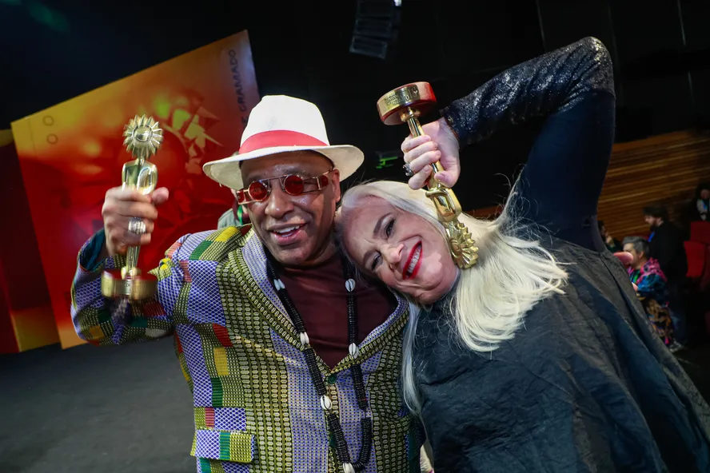

Foto — Edison Vara
Cinema
Festival de Gramado 2023 veja lista completa de premiados
O Kikito é o símbolo e prêmio máximo concedido no Festival de Gramado, um dos mais importantes e reconhecidos prêmios do cinema brasileiro.…